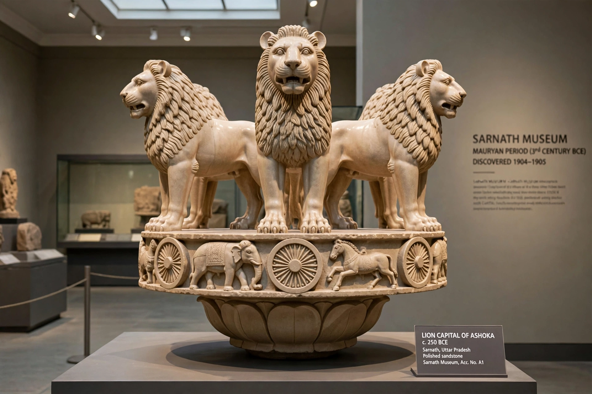

Maurya Empire

The Lion Capital of Ashoka from Sarnath, carved in polished sandstone
The Maurya Empire (c. 322–185 BCE) was the first large empire of the Indian subcontinent, founded by Chandragupta Maurya, who overthrew the Nanda dynasty and checked the successors of Alexander the Great. From its capital at Pataliputra (modern Patna) it ruled most of South Asia except the far south. Its third ruler, Ashoka, after a famously remorseful conversion following the Kalinga war, spread Buddhism across Asia and left the earliest decipherable inscriptions of India, carved on pillars and rocks across his realm.
Chandragupta and administration
Chandragupta (r. c. 321–297 BCE), advised according to tradition by the strategist Kautilya (Chanakya), defeated the Nandas and then in c. 305 BCE confronted Seleucus I, Alexander's successor in the east; the peace gave Chandragupta the trans-Indus provinces in exchange for 500 war elephants. The Greek envoy Megasthenes described Pataliputra's palisaded splendour. The Arthashastra, attributed to Kautilya, sets out a science of statecraft — taxation, espionage, law and war — of remarkable sophistication.
Ashoka and decline
Ashoka (r. c. 268–232 BCE) expanded the empire to its greatest extent; the slaughter at Kalinga (c. 261 BCE) filled him with remorse, and his edicts preach dhamma — tolerance, non-violence and welfare. After his death the empire fragmented within half a century; the last Maurya, Brihadratha, was assassinated by his commander Pushyamitra Shunga in 185 BCE. Mauryan art, notably the polished Ashokan pillars with their animal capitals, set the pattern for Indian imperial art; the lion capital at Sarnath is modern India's national emblem.